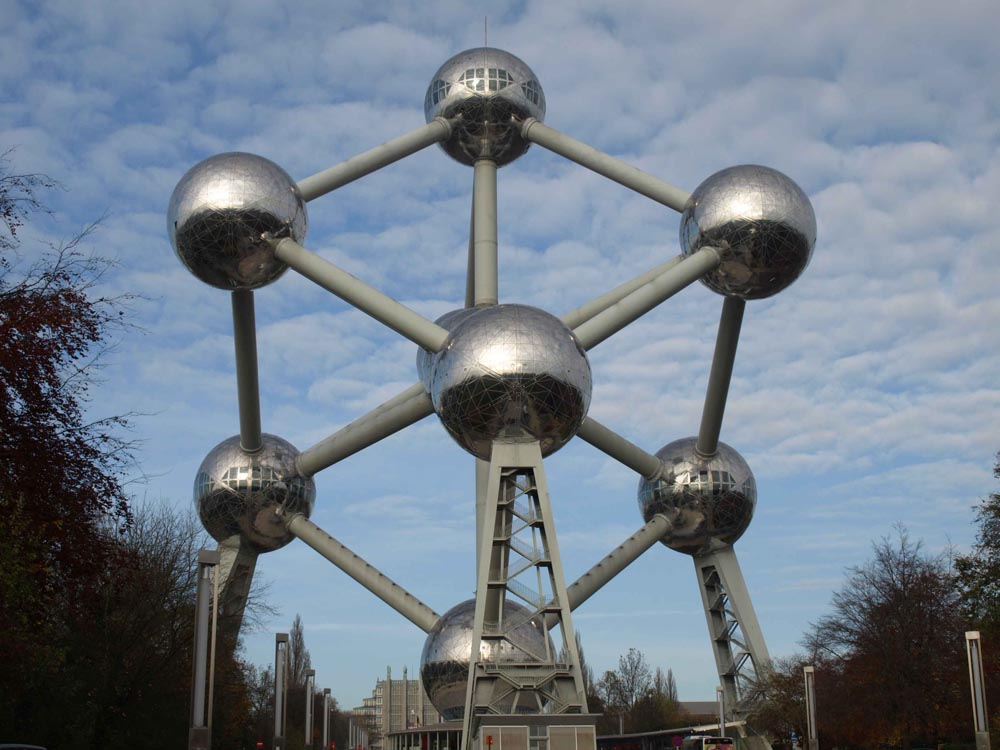

Het Atomium is een monument in het Heizelpark in Brussel. Het is een stalen constructie die bestaat uit negen bollen met elk een diameter van 18 meter. De bollen vormen samen het kubisch ruimtelijk gecentreerde kristalstructuur van ijzer, 165 miljard maal vergroot. Het gebouw werd ontworpen door ingenieur André Waterkeyn en is sinds de restauratie bekleed met roestvast staal. Vijf van de negen bollen zijn toegankelijk voor het publiek.
